УКИМ
Универзитет Св. „Кирил и Методиј“
ФИНКИ
Факултет за информатички науки и компјутерско инженерство
Историја на ФИНКИ
Факултет за електротехника и информациски технологии
+
Природно математички факултет
Факултет за информатички науки и компјутерско инженерство (2011)
Каде се наоѓаме?
View Larger Map
Деканат, студентска служба и останати служби
Зградата на Технолошко-металуршки факултет Карпош II б.б. Скопје
Предавални, лаборатории, канцеларии
Простории на ИКТИ во зградата на Факултетот за електротехника и информациски технологии, Скопје
Простории на ИИ во зградата на Природно-математичкиот факултетот, Скопје
Основни податоци
- Високо професионален и обучен кадар
- Најголем супер-компјутер во Македонија
- Современо опремени лаборатории
- Факултетски компјутерски центар
- Безжичен интернет што го покрива целиот простор на факултетот
- Спортска сала, сопствен паркинг, студентско бифе...
Зошто ФИНКИ?
- 718 бруцоши го избраа ФИНКИ во 2014
- 685 бруцоши го избраа ФИНКИ во 2013
- 680 бруцоши го избраа ФИНКИ во 2012
- 670 бруцоши го избраа ФИНКИ во 2011
Дејности на факултетот
Образовна
- Додипломски студии
- Магистерски студии
- Докторски студии
Научно-истражувачка
Апликативна
Наставен кадар
Степени на образование
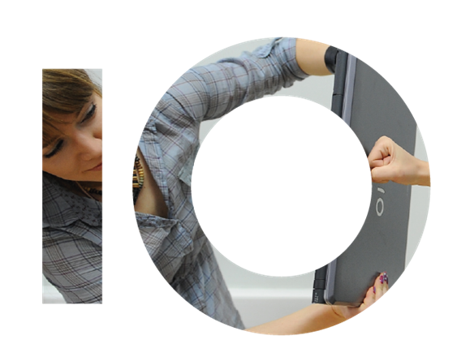Додипломски студии
3 годишни
4 годишни
finki.ukim.mkМагистерски студии
2 годишни
1 годишни
finki.ukim.mkДокторски студии
3 годишни
finki.ukim.mkЕвропски кредит трансфер систем
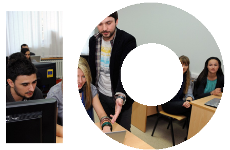Можност за избор на одредена специјалност и профилирање
Предметите се поделени на задолжителни и изборни
Континуирано оценување
- Парцијални испити
- Тестови
- Домашни задачи
- Семинарски работи
- Лабораториски вежби
- Проектни задачи и тимска работа на проекти
Запишување предмети
- Изменет е начинот на запишување на учебните години
- Секој неположен предмет во една учебна година се презапишува и преслушува во следната
- Можност за слушање предмети на други факултети и универзитети
Практична работа за време на студиите
- Задолжителна пракса за сите студенти
(најмалку 1 месец во годината)
- Студентски пракси во многу компании во земјата и странство
- Соработка со индустријата за реализација на студентски проекти, дипломски работи и делови од едукативните активности по некои од предметите
- Официјална поддршка од МАСИТ
Стопанската комора за информатички и комуникациски технологии
Стекнување на светски познати сертификати во рамки на наставата
CISCO SYSTEMS – водечка IT фирма
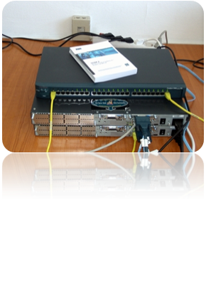CISCO NETWORKING Academy program
Microsoft ИТ академска програма
VUE Pearson центар за тестирање
nVidia Training Center
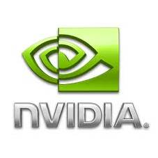Современ систем за следење на наставата
- Далечинско учење
- Web достапност на материјали, дискусии, новости, соопштенија
- E-mail комуникација со професорите и асистентите
Современ систем за електронско тестирање
- Е-тестови
- Е-анкети
- Е-оценување
Опременост на ФИНКИ
СМАРТ табла на ФИНКИ

Услови за упис
предмети
Екстерни
- мајчин јазик (македонски, албански и турски)
- математика (најмалку основно ниво)*
Интерни - гимназии
- физика, информатика, или странски јазик
- еден предмет по избор на кандидатот
Интерни - средни училишта
- физика, информатика, или странски јазик
- стручен предмет- избор на кандидатот
Матурантите кои ќе полагаат напредно ниво математика, како екстерен предмет, ќе имаат еднаков третман во однос на освоените поени како и оние кои полагале основно ниво математика
Додипломски студии
Нови студиски програми
Пренесени од старите факултети
750 места за упис во 2012 година
980 места за упис во 2013 година
? места за упис во 2014 година
630 во државна квота
310 со кофинансирање
40 вонредни
КНИ
Студии за компјутерски науки и инженерство
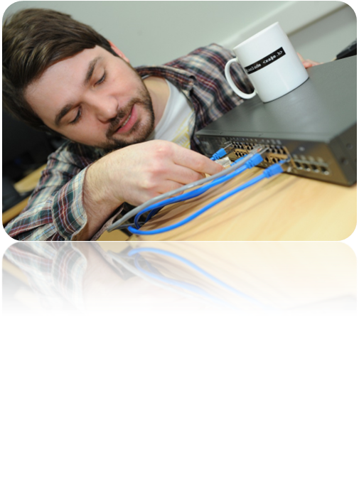Титула (8 семестри)
Дипломиран инженер по информатички науки (Bachelor of Science)
насока: Компјутерски науки и инженерство
Титула (6 семестри)
Дипломиран инженер по информатички технологии (Bachelor of Engineering)
насока: Компјутерски науки и инженерство
Квота
| Број на студенти | Цена (ЕУР) | |
|---|---|---|
| Државна квота | 150 | 200 |
| Кофинансирање | 70 | 400 |
МТ
Студии за мрежни технологии
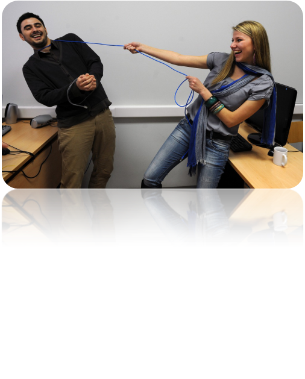Титула (8 семестри)
Дипломиран инженер по информатички науки (Bachelor of Science)
насока: Мрежни технологии
Титула (6 семестри)
Дипломиран инженер по информатички технологии (Bachelor of Engineering)
насока: Мрежни технологии
Квота
| Број на студенти | Цена (ЕУР) | |
|---|---|---|
| Државна квота | 100 | 200 |
| Кофинансирање | 50 | 400 |
ПЕТ
Студии за примена на е-технологии
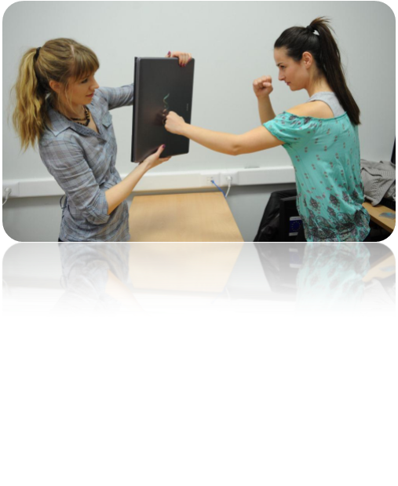Титула (8 семестри)
Дипломиран инженер по информатички науки (Bachelor of Science)
насока: Примена на е-технологии
Титула (6 семестри)
Дипломиран инженер по информатички технологии (Bachelor of Engineering)
насока: Примена на е-технологии
Квота
| Број на студенти | Цена (ЕУР) | |
|---|---|---|
| Државна квота | 100 | 200 |
| Кофинансирање | 50 | 400 |
ИЕ
Студии за информатичка едукација
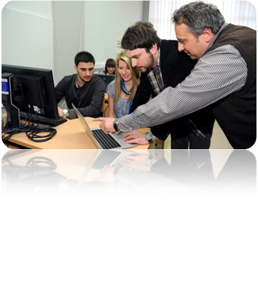Титула (8 семестри)
Дипломиран професор по информатика
Квота
| Број на студенти | Цена (ЕУР) | |
|---|---|---|
| Државна квота | 20 | 200 |
| Кофинансирање | 10 | 400 |
ИКИ
Информатика и компјутерско инженерство
8 семестри
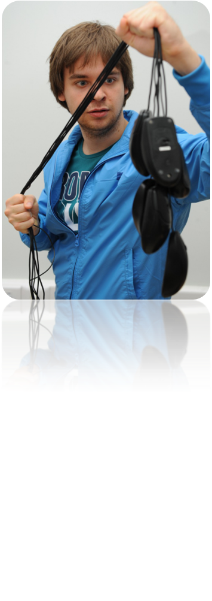Титула
Дипломиран инженер по електротехника и информациски технологии
Специјалност
Информатика и компјутерско инженерство
Квота
| Број на студенти | Цена (ЕУР) | |
|---|---|---|
| Државна квота | 60 | 200 |
| Кофинансирање | 30 | 400 |
АСИ
Академски студии по информатика
8 семестри
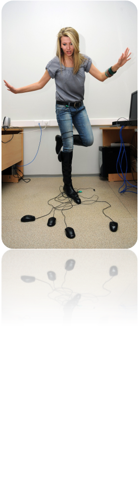Титула
Дипломиран инженер по информатика
4 специјалности
- Компјутерски науки
- Информациски системи
- Програмско инженерство
- Компјутерски архитектури и мрежи
Квота
| Број на студенти | Цена (ЕУР) | |
|---|---|---|
| Државна квота | 40 | 200 |
| Кофинансирање | 20 | 400 |
ИТ
Професионални студии по Информатички технологии
6 семестри
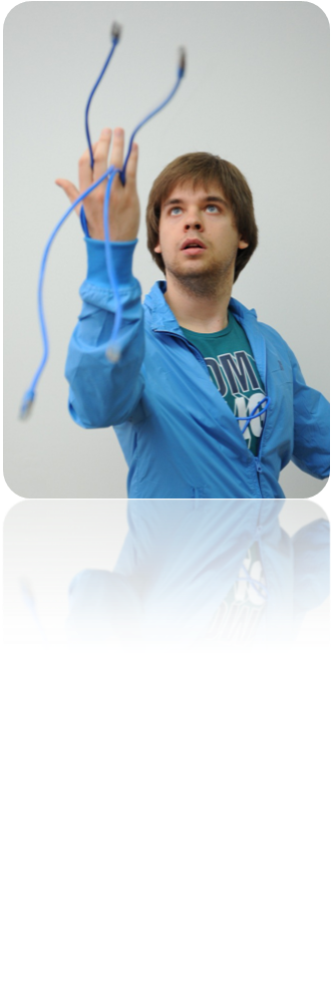Титула
Дипломиран инженер по информатички технологии
2 модули
Интернет и мобилни технологии
Администрирање на компјутерски мрежи
Квота
| Број на студенти | Цена (ЕУР) | |
|---|---|---|
| Државна квота | 20 | 200 |
| Кофинансирање | 10 | 400 |
ИНФО
Професионални студии по информатика
6 семестри

Титула
Дипломиран инженер по информатички технологии
Квота
| Број на студенти | Цена (ЕУР) | |
|---|---|---|
| Државна квота | 20 | 200 |
| Кофинансирање | 10 | 400 |
ИКТ во образованието
обука со СМАРТ табла
- Единствена можност за најсовремена настава во областа на образованието : професор по информатика
- Бидете првата личност која на младите луѓе ќе им ја пренесе љубовта кон информатиката
- Опис: динамична, современа професија, исполнета со креативни предизвици
- средни училишта
- основни училишта
Мислења на студентите
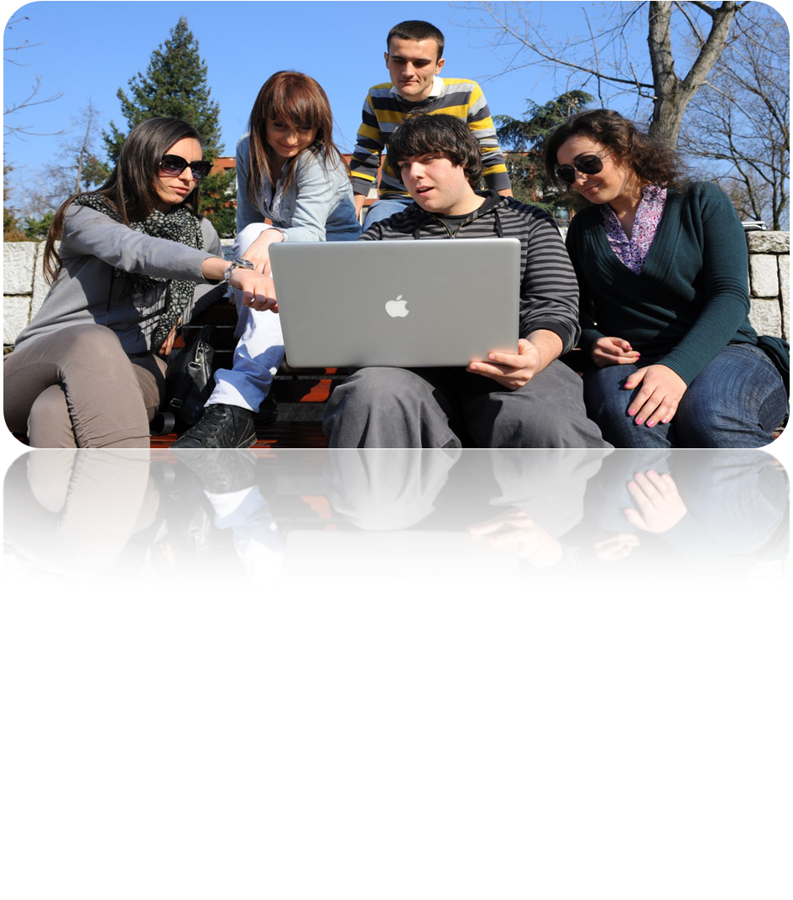„ФИНКИ нуди најсовремени студиски програми и најдобри услови за студирање информатика во Македонија.“
„Програмите кои се нудат на ФИНКИ се многу блиски со програмите на факултетите од Европа и светот.“
„Доколку јас би можел да избирам уште еднаш каде да се запишам, без размислување би го избрал ФИНКИ.“
„Ова е една од важните одлуки што ја донесов во мојот живот и за која во ниеден момент не се поколебав, затоа што со оваа моја определба ми се отвори можност да успејам во животот и да се изградам и оспособам како успешен човек.“
„Насоката програмско инженерство беше вистинскиот избор за мене, ми помогна да се развијам во правилна насока и да ги стекнам потребните знаења и вештини.“
„Од тука произлегуваат најдобрите инженери за информатика кои се, всушност, новата перспектива за иднината на нашата земја и нејзиниот севкупен разој.“
„Една од најголемите предности, за коишто неможев да бидам свесен пред да се запишам, е тоа што професорите и асистентите се способни и волни да ви го пружат сето знаење потребно да ги задоволи, како вашата жед за знаење, така и вашите идни работодавци.“
Отворен ден
Некоја Сабота во Мај 2015
Сите заинтересирани се поканети да ги посетат училниците и лабораториите на ФИНКИ и да се запознаат со професорите